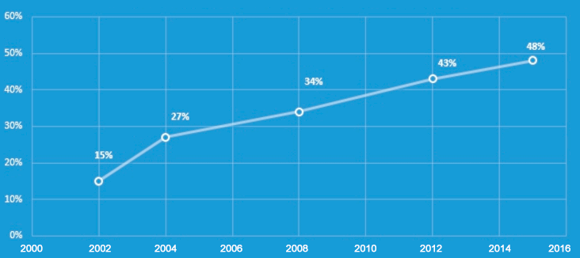

Откритие на фармацевти: 8 от 10 смъртоносни болести са причинени от паразити!
Токсините са тихи убийци, скрити в паразитите, които причиняват отслабване на
имунитета, което в 75% от случаите води до рак, гъбични инфекции в 43% от случаите
и в 65% от случаите причинява инфаркт.
Здравейте! Аз съм Марина Петрова. Аз съм бивш служител на Лабораторията за разработване на лекарства. Пиша тази статия, защото ми беше отказан достъп до всички медицински общности и форуми. Съвсем случайно открих шокиращата тайна на моята компания. Искаха да ми платят, само за да си държа устата затворена, но аз отказах. Всеки трябва да знае това!
Още през г. беше публикувана статия, която разтърси много лекари. Лекарите от Германия, Америка, Австрия и Румъния завършиха проучвания, които продължиха 17 години и включваха 12 400 доброволци. Беше заключено и доказано, че в 78% от случаите паразитите причиняват смърт, която настъпва след сериозни заболявания. Открито е, че хората трябва да изхвърлят токсините от тялото си, за да предотвратят смъртоносни заболявания и да удължат живота с около 15 години. Тези токсини се произвеждат от паразити, които създават благоприятна среда за развитие на злокачествени тумори и други сериозни заболявания.
Смъртоносните паразити навлизат в тялото чрез риба, зеленчуци, месо и плодове, които купуваме в супермаркетите.
Паразитите живеят в почти всеки човек. Според официалната статистика 84% от хората в България са заразени. Основните видове паразити са аскариди, тении и перки. При пристигане в стомаха, черния дроб, кръвоносните съдове те могат да достигнат дължина от 20 см. Всеки ден те снасят до 240 000 яйца, които, навлизайки в стомаха, проникват в кръвта, която допълнително ги разпространява в тялото.
В 43% от случаите паразитите причиняват гъбични инфекции
Candida albicans е един от организмите на чревната флора и принадлежи към групата на организмите, които живеят в устата и хранопровода на човека. В 43% от случаите токсините, отделяни от хелминти, причиняват внезапното им увеличаване, което причинява хронична гъбична инфекция.
ДИНАМИКА НА СЪОТВЕТСТВИЕТО МЕЖДУ ПАРАЗИТИТЕ И РАЗВИТИЕТО НА ГЪБИЧНАТА ИНФЕКЦИЯ ПРИ ЖЕНИ НА НАД 25 ГОДИНИ
Ако лечението не започне навреме, паразитите причиняват сериозно увреждане на имунната система, която не е в състояние да се бори с тях и това отваря вратата и за други заболявания. Огромното количество токсини, произведени от паразити, не могат да бъдат прочистени от организма. Така те продължават да се натрупват в стомаха и запушват кръвоносните съдове, отравяйки тялото. Затова първите признаци на инфекция са лош дъх, акне и черни точки.
Трихомонада - паразитите, открити в кръвоносните съдове, могат да бъдат отстранени чрез навременно лечение с антипаразитни лекарства. Тези паразити са причина за ранни инфаркти в 94% от случаите. В 79% от случаите и честите главоболия се причиняват от паразити. По-долу можете да видите човешкото сърце, заразено с тази „чума на 21 век“.
Инфектиран с шистозом черен дроб:
- Симптоми на инфекция:
- обриви като черни точки и пъпки
- лош дъх
- високо кръвно налягане
- главоболие
- подуване
- сърдечна болка
Нашата лаборатория разработи ефективно средство срещу паразитите. . Резултатите от теста бяха шокиращи: паразитите изчезнаха от тялото само за седем дни! След известно време обаче симптомите се върнаха, както и паразитите. Само аз бях разстроена от това. Ръководителят на моя екип беше развълнуван и подготвяше лекарство за масова продажба. Затова реших сам да стигна до целта.
И ето какво открих. Съставът на лекарството се основава на най-евтината естествена съставка, наречена бял равнец. Той бързо и истински „унищожава“ паразитите, като премахва токсините от червата. Но съставът му беше минимален и недостатъчен. Що се отнася до останалите съставки, те бяха вредни химикали, които временно намаляват активността на паразитите. След известно време те стимулират разпространението на паразити и симптомите на инфекцията се връщат, както и рискът от рак и други сериозни заболявания. Накратко, това „супер- лекарство“ лекува само симптомите, но не и причината за проблема. Казах на ръководителя на екипа си, а той ме нападна с думите: "Какво си мислиш, Марина Петрова? Искаш да разработим лекарство, което да реши проблема веднъж завинаги и така да загубим работата си? От това се издържаме." Тогава той ми каза да си държа устата затворена, опита се да ми плати и дори ме заплаши.
97% от пациентите се отърват от паразита за 2 седмици
Реших самa да направя изследването. И съм благодарнa на хората, които се отзоваха на моята покана в социалните мрежи, които се съгласиха да участват, помогнаха ми да попадна в телевизията и вестниците.
Резултатите от предварително проучване, включващо 280 доброволци, бяха шокиращи: 243 души, заразени с паразити, имаха следните симптоми: главоболие, лош дъх, акне, хронична гъбична инфекция, акне, пъпки, ранно плешивост, себорея, чупене и белене на ноктите, честа ангина , полипи, тонзилит, синузит, неразположение, чести заболявания на пикочно-половата система.
Четох медицински книги и в крайна сметка купих продукт, наречен . Това е единственият изцяло натурален продукт, прост и евтин, който съдържа комплекс от естествени съставки: ароматен карамфил, екстракт от суха пелена, пелена от трева, екстракт от суха шия, цветя на шията. Подробното му описание може да бъде намерено на официалния уебсайт на производителя. Най-важното е, че няма да го намерите в аптеките. Големите компании нямат интерес да продават това наистина ефективно лекарство, което не струва почти нищо.
97% от пациентите чувстват подобрение, свързано с паразити, дори в тежки случаи
По-долу ще намерите подробен протокол за тестване и съобщения от тези, които са искали да споделят своите положителни резултати.
Как оправих паразитната ситуация“: преживявания
Елизабета, на 27 години
Бях шокирана да открия, че моята дългосрочна кандидоза е причинена от паразитен червей. Всичките ми предишни опити да се отърва от паразита бяха неуспешни, всички лекарства бяха безполезни. Патологичните тестове показаха, че успях да подобря състоянието си само за седем дни. Патологичните тестове бяха по-добри всяка седмица. Още по-изненадана бях, когато разбрах, че този препарат е много евтин. Той се продава само на уебсайта на производителя и пристига след 3-5 дни. Благодаря!
Генка, на 39 години
Здравей! Когато научих, че лошият дъх е признак на чернодробна инфекция с шистозома и че метастазира в цялото тяло, бях отчаяна. Аз самата съм медицински работник. Прочетох това и съм наясно с ужасната статистика, защото и аз съм част от тях. Лекувах зъбите си, стомаха си, но напразно. Реших да опитам , за да прочистя тялото си. Лошият дъх изчезна и съпругът ми, който избяга от мен и се плашеше, когато го прегръщах, сега ме целува. :) Всеки, който цени живота си, трябва да пие (бял равнец) по превантивни причини.
Грета, на 41 години
Здравейте! Моята история не е много по-различна от останалите, тя има щастлив край. Кариерата ми отне най-добрите години в живота ми, ожених се късно. Имах някои усложнения по време на бременността, имах преждевременно раждане и бебето имаше много здравословни проблеми, включително опасно отравяне. Моето момиченце е добре, но състоянието ми беше лошо, отне ми много време да се възстановя, твърде много лекарства не носят нищо добро. Моят приятел участва в изследването и ми препоръча да направя пълна детоксикация на тялото, за да се отърва от всички паразити. Купих на уебсайта на производителя и за 9 дни всички лоши чувства изчезнаха - постоянна болка в стомаха и лоша чернодробна функция. След още седем дни се почувствах много по-добре. Сега използвам това лекарство два пъти годишно по превантивни причини. И най-важното е, че вече не се тровя с хапчета.
Радвам се, че изследването ми е било полезно. Стигнах до същността на въпроса и намерих бърз и безопасен начин да се отърва от паразитите. Най-евтиният е достъпен на официалния уебсайт на производителя. Отнема седем дни за доставка в която и да е част на Балгария.
Единственото ми притеснение е, че хората от Американската фармацевтична асоциация ще разберат за този мой пост. Моят блог може да бъде премахнат по всяко време. Благодарение на мен тези "обирджии" търпят големи загуби. Ако сте успели да прочетете тази статия за навреме, имате късмет. Това означава, че истината все още се вижда и че хората успешно се борят за здравето си!
Коментари:
Лекарят ми предписа . Дълго време имах болки в стомаха и проблеми с черния дроб. След детоксикация всичко изчезна.
ШОКИРАЩО! Приятелят ми, който между другото е лекар и известен учен, ми потвърди, че паразитите могат да причинят сериозни заболявания и дори рак. Марина Петрова, възхитена съм от вашата смелост и решителност! Сама, въпреки влиянието на големите компании, вие постигнахте такъв резултат. Попаднах на втората ви статия за и сега сайтът е блокиран. Благодаря ви много, отървах се веднъж завинаги от тази ужасна болест.
Моята приятелка загуби съпруга си, който почина миналата година след тежко заболяване. Лекарите казаха, че основните причини за смъртта му са паразити в черния дроб. Сега децата ми също пият веднъж годишно, дори не искам да си представям, че нещо ужасно може да се случи с децата ми.
Миналата година започнаха сърдечните ми проблеми, останах без дъх и усетих болки в гърдите. След изчерпателни изследвания те откриха, че имам паразити в кръвоносните съдове !! Казаха, че е обичайно. Доколкото си спомням, препаратът, който приемах, се наричаше .
Работи, потвърждавам. Когато направих теста за патология миналата седмица, беше ясно, че състоянието е много по-добро!
Гледах телевизионно предаване за . Чувалa съм, че това е най-добрият препарат за паразити.
Благодаря за съвета. Трябва да направя детоксикацията. Поне веднъж в живота ми. Никога досега не съм го правила, но съм сигурна, че ще ми е по-добре без паразити. :) Сигурен съм, че имам някои от тях в себе си. Има големи шансове да ги получите всеки ден от живота си.
Имах главоболие. Пих няколко седмици и главоболието спря напълно. Мисля, че някои същества са живели в мен ...
Напълно съм съгласна. Когато започнах да пия , нещо буквално падна от мен. Изплаших се и отидох на лекар в основната болница. Там намерих паразитолог, който като видя откритието ми, каза, че имам червеи в черния дроб. Без , щях да умра след 2-3 години.
Имам и добър опит с използването на . Пречисти тялото ми от много гадни неща. Сега се чувствам много по-добре, плюс не се разболявам толкова често, колкото преди. Накратко, това е много полезен продукт. Изглеждам още по-добре. Цветът на косата ми е по-светъл, ноктите ми спряха да се белят и тенът ми е свеж.
Невероятен продукт! Само след 4 дни употреба виждам страхотни резултати! И се чувствам с 10 години по-млада. Не пропускайте да опитате.
Сега се чувствам много по-добре, дори се чувствам по-младa след детоксикация. По-малко се уморявам и успявам да правя повече неща през деня. Изглеждам страхотно. Косата, ноктите, кожата ми станаха по-млади и по-здрави. Поръчах на официалния сайт. Малко след това ми се обади консултант по продажбите, който търпеливо отговори на всичките ми въпроси.